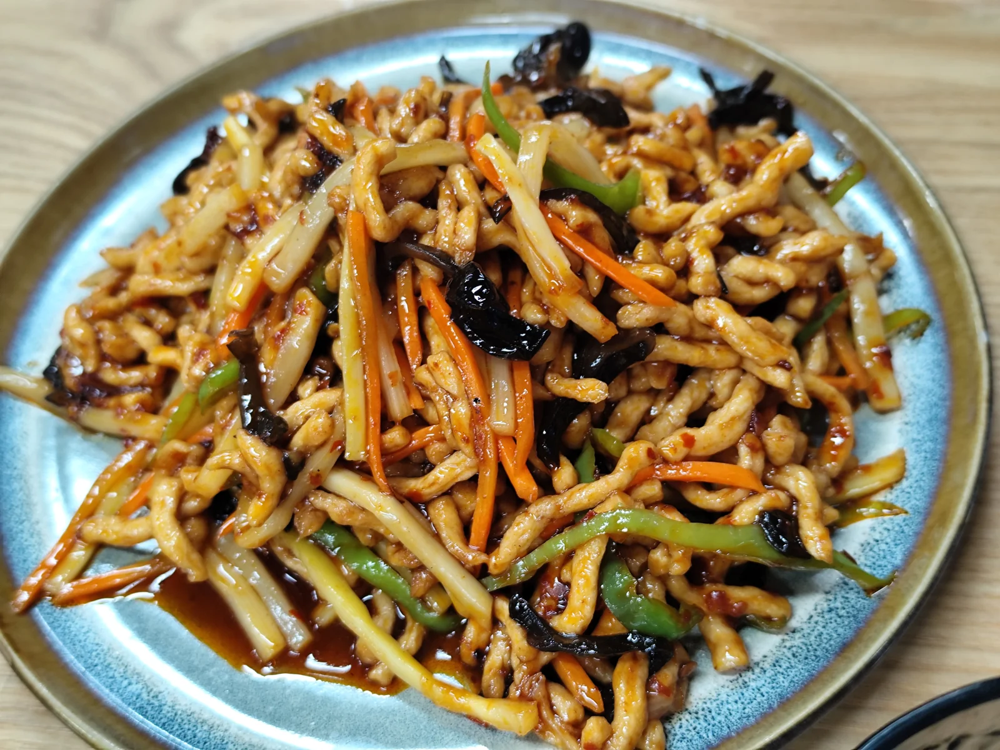

凤凰岭 + 素虎 / 山脚恢复
春季周末 · 海淀西山更有爬升感的一天，收尾用素食 / 山脚轻恢复把节奏拉长
北京·海淀
凤凰岭素虎收尾
7.0h
29km
7.1km / 684m / 3.6h
L4 可执行
五道口出发
封面速览


图片优先用真实 session 下的小红书搜索结果卡片图做 vibe 层理解；徒步定量以六只脚页面为准，目的地公开信息以携程 / Bing / 点评公开结果补证。
行程卡
| 字段 | 内容 |
|---|---|
| 区域 | 北京·海淀 |
| 主题 | 凤凰岭素虎收尾 |
| 总时长 | 7.0h |
| 预估自驾 | 29km |
| 徒步参数 | 7.1km / 684m / 3.6h |
| 强度 | 中等偏上 |
| 适合 | 想离城近一点但又想真上山 / 能接受更陡一点爬升 / 喜欢山下补一顿像样午餐的人 |
| 一句话结论 | 比阳台山和白虎涧都更“认真”一些，但离城仍近，是海淀线里很值得补齐的一张牌。 |
路线摘要
凤凰岭是离城近、识别度高、公开资料丰富的一条线。它的山感和爬升都更明显，适合做“上午认真爬、下山好好吃”的海淀版方案。
🏞️ 目的地介绍
六只脚的 trip 9923923 可以直接读到 7.1km、累计上升 684m、历时 3h37m，说明它虽然不长，但爬升感是实打实的。Bing 搜索“凤凰岭 大众点评”能稳定看到景区攻略和公开攻略贴；携程公开景点页也把凤凰岭作为海淀经典景区长期维护。
✨ 搭配内容
小红书“凤凰岭 素虎”和“凤凰岭 咖啡”能看到山下吃饭 / 休息的稳定搭配。Bing 检索“素虎 凤凰岭 大众点评”还能直接看到大众点评的照片页结果，说明这家是一个比较明确的收尾锚点。
推荐行程安排
| # | 安排 | 时长 |
|---|---|---|
| 1 | 五道口出发，进海淀西山方向，去凤凰岭景区附近停车 | 0.8h |
| 2 | 凤凰岭徒步主线，控制节奏，不把它走成纯拉练 | 3.6h |
| 3 | 下山后在山脚做恢复型午餐 / 素食 / 咖啡收尾 | 1.2h |
| 4 | 返程，若不赶时间可在周边再坐一会儿 | 1.4h |
多源验证速记
六只脚
成熟参考：9923923。页面可读到 7.1km、684m、3h37m，强度比白虎涧 / 蟒山更像“认真爬山”。
小红书
搜索“凤凰岭 素虎 / 凤凰岭 咖啡”能看到山脚恢复型搭配，不只是景区打卡。
点评 / Bing
Bing 结果能读到“大众点评 凤凰岭攻略”与“素虎素食（凤凰岭店）照片页”等公开入口，说明商户锚点不是空泛猜测。
携程
凤凰岭是公开资料非常成熟的景区，适合补门票、位置、基础玩法与大众认知。
为什么保留这条
- 补齐了“海淀离城近，但仍然有真山感”的路线类型。
- 能和现有门头沟线拉开差异：同样认真，但凤凰岭更近、更方便。
- 商户收尾方向明确，不是只给一个景区名就结束。
临门一脚 / 风险提示
- 这条的爬升明显高于卡面字数给人的感觉，别把它当纯遛弯线。
- 周末热门程度可能较高，建议早到或者避开正午扎堆时段。
- 如果只想轻松晒太阳，这条不如蟒山和书画山。
🍽️ 点评信息卡（商户锚点）
凤凰岭这条的收尾比白虎涧更明确：一顿像样午饭比咖啡更重要，所以把素虎放成第一锚点。
素虎素食（凤凰岭收尾锚点）
北京素食自助 / 恢复型午饭
用户历史方案里最像“认真爬完以后吃顿稳饭”的搭配
点评榜单北京素食自助第1
›适合场景 凤凰岭下山后补一顿舒服、不会太油的午饭›
恢复型正餐口碑成熟适合家庭不容易踩空
作为凤凰岭线收尾锚点使用
到店补午饭
- 为什么它重要
- 凤凰岭的爬升是真实存在的，所以下山后更需要一顿稳定正餐，而不是只喝杯咖啡。
- 好评信号
- 评论量大、容错率高、适合家庭共识型用餐，不容易因为挑口味把收尾搞乱。
- 风险
- 如果你更想要“山脚很近”的即时收尾，可能还得再配一间更靠近景区的咖啡或简餐。
凤凰岭周边咖啡（片区检索锚点）
凤凰岭周边咖啡 / 山脚轻休闲
如果当天不急着回城，可以再坐 30–40 分钟
推荐策略先吃稳，再决定要不要加咖啡
›建议动作 只在时间富余时再加›
可选项不必强求适合慢收尾拉长一天节奏
凤凰岭 / 海淀西山返程片区
检索时间富余再去
- 推荐用法
- 这条线的第一需求通常是补体力，不是继续打卡。咖啡适合作为“今天状态特别好”的加分项。
- 好评信号
- 离景区近、停车方便、评论里少见“只有环境没出品”。
- 风险
- 别因为再找一家咖啡把返程时间拖太晚，尤其是带孩子或第二天还要上班的时候。